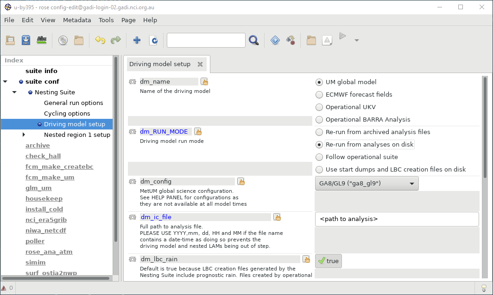
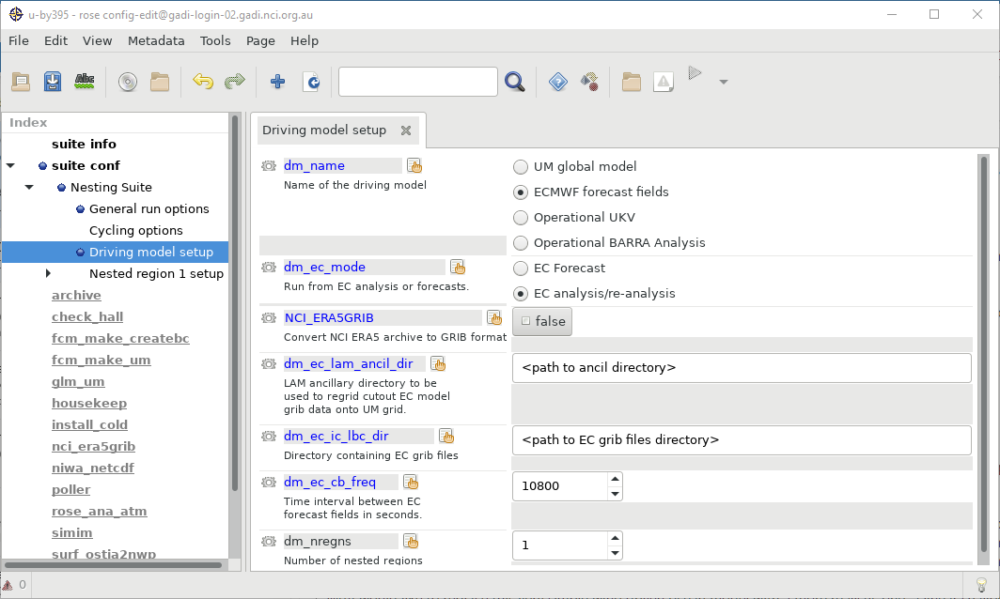
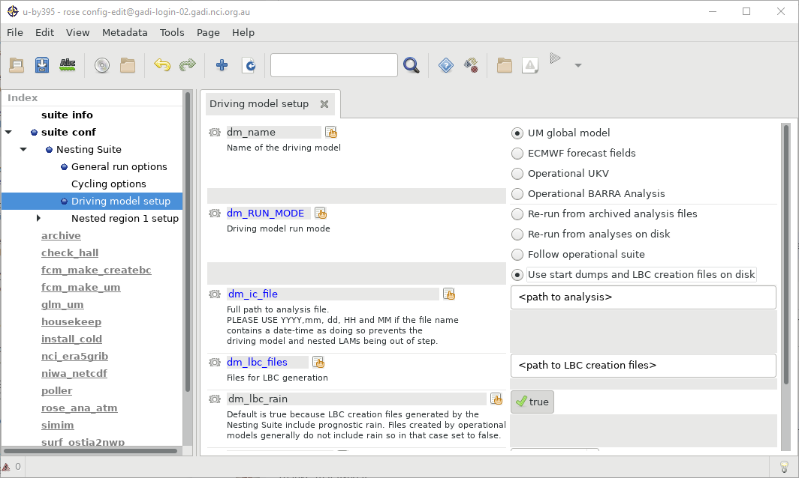
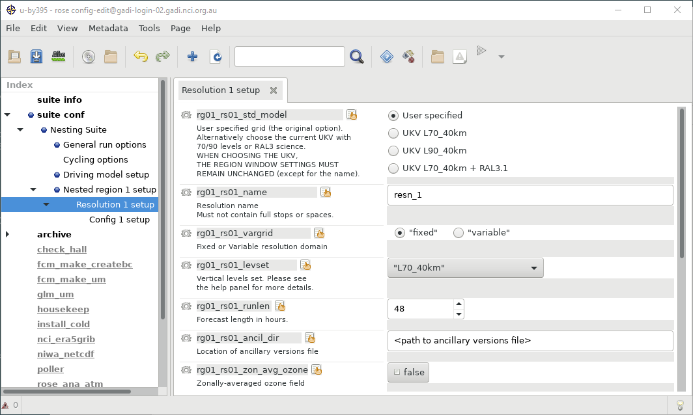
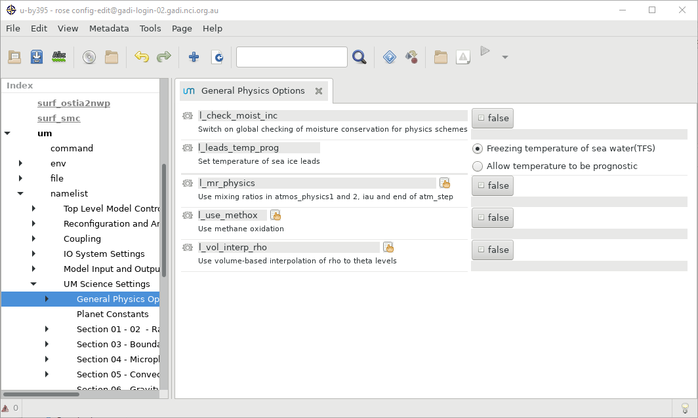
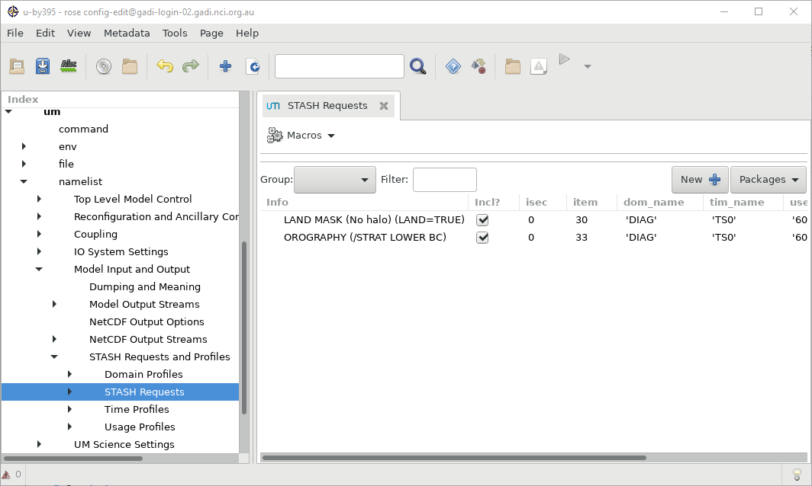
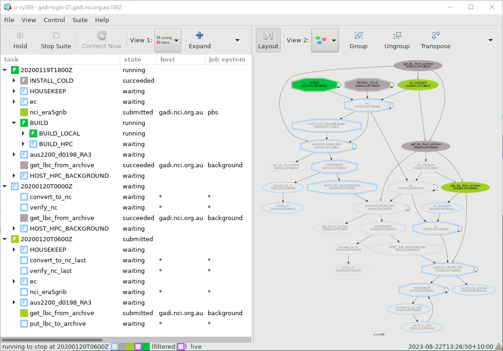

Running the Model#
The Regional Nesting Suite is used to run one or more regional models nested inside each other, optionally with a global driving model.
Suite u-cy369 has been set up to run our sample domain. Check out the suite with rosie checkout u-cy369 and open it in rose edit. Make sure to set the SITE to nci-gadi in ‘General Run Options’.
Driving Data#
There are several ways to drive the RNS. Not all options are enabled at NCI, talk to your local support if you would like to use a method that’s not been ported.
At NCI, you can choose one of:
Run a full global model
Run from ERA5
Run from a start dump and LBC files from a previous run
Global Model#
To drive with a full global model choose “UM Global Model”, “Re-run from analyses on disk”. You will need to provide an initial conditions file.

ERA5#
NCI have a mirror of ECMWF’s ERA5 dataset. To drive the model with this data choose “ECMWF forecast fields”, “EC analysis/re-analysis”. You will need to create a set of ancillaries to convert the ERA5 data to UM format. These can be created with the RAS as an additional domain, they should be at 0.1 degree resolution and cover an area ~ 10 gridpoints larger than your target domain.
Settings:
NCI_ERA5GRIB: When true, runs a task to convert the ERA5 archive data to GRIB format readable by the model. Can be disabled if this has been done previously for this domain and time period
dm_ec_lam_ancil_dir: UM ancillary files for the GRIB to UM conversion
dm_ec_ic_lbc_dir: Directory to store GRIB format files

Files on Disk#
To drive the model from an arbitrary previous UM run, provided it saved LBC data, choose “UM global model”, “use start dumps and LBC creation files on disk”. The files don’t need to be created from a global model, e.g. you could use this option with archived BARRA initial and boundary conditions.
Settings:
dm_ic_file: Initial conditions
dm_lbc_files: Lateral boundary conditions
These paths can include date codes like YYYYmmdd to automatically use the run’s start date.

Nesting Configurations#
Nest configuration works similar to the Regional Ancillary Suite, however there is now one more layer - configs.
Resolutions#
Resolutions get the grid settings from the RAS output data.
Settings:
levset: Vertical levels, must match RAS data
runlen: Forecast length
ancil_dir: Directory with ancils from RAS

Configs#
Configs let you run multiple different science configurations at the same domain to test science changes.
The timestep and radiation timestep values need to be changed with resolution, see the help page.
Settings:
config: Science configuration, e.g. RAL3p1
stashpack: Preset output fields, e.g for RES
dt, raddt: Timestep, see help page for guidance based on resolution
lbc_freq: Frequency to read in (first number) and write out (second number) lateral boundary conditions
ic_lbc_src: Resolution, Config that will drive this nest (not available for the first config)

Cycles#
Date settings for the RNS are set in the “Cycling Options” panel
The RAS can be run in either re-initialised mode or free-running mode. In re-initialised mode the driving model and all nests will be restarted every CYCLE_INT_HR hours from a new analysis. In free-running mode each nest’s outputs from the previous cycle are fed in to the next cycle.
The amount of time each nest runs for is set at the Resolution level as rgNN_rsNN_mNN_runlen. When in free-running mode this should match CYCLE_INT_HR, and each nest should not have a longer runlen than its driving model.

Output Fields and Science Configuration#
General science options can be set under the “um” section on the left. Take note that the Config’s science configuration may override the settings in the user interface, hover over the hand icon to see what options override that setting

Likewise output fields use the standard STASH configuration - each field needs a domain processing (dom), a time processing (tim), and an output (use).
Presets are:
Domains
atm_soil: soil levelsdiag: single leveldpft,dtyle: land/vegetation typesp850_200: 5 pressure levels from 850 to 200 hPaplevs: 22 pressure levels from 1000 to 30 hParo_1_80: rho levels 1 to 80th_0_40,th_1_60,th_1_80,th_1: theta levels 0 to 40, 1 to 60, 1 to 80, 1
Times
t1hr: Hourly instantaneoust1hr_mn: Hourly meant3hr: 3-hourly instantaneoustacc3hr: 3-hourly accumulationtacc6hr: 6-hourly accumulationts0: Timestep 0ts1: Timestep 1
Usage
60_diags: Output file$DATAM/${RUNID}a_pa%N

Exercise#
Add a new output field, or change the stashpack settings (make sure to leave verstash enabled), then run the model
